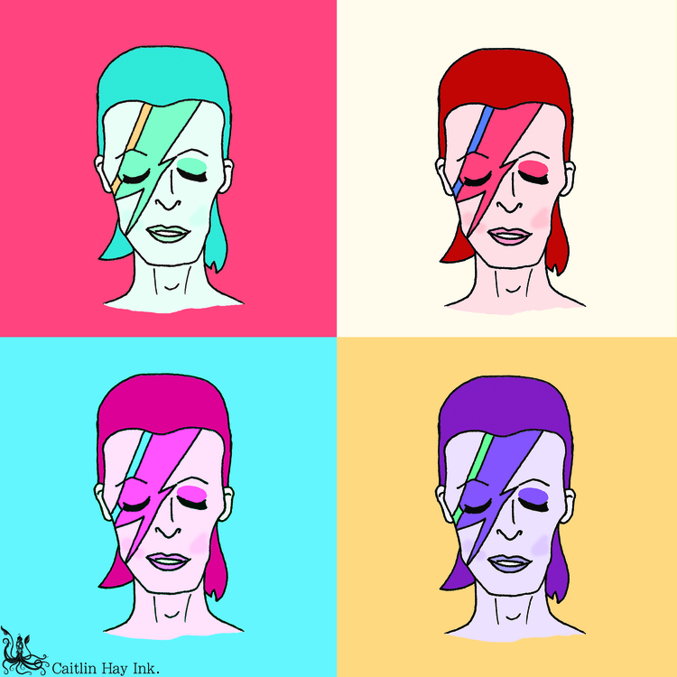
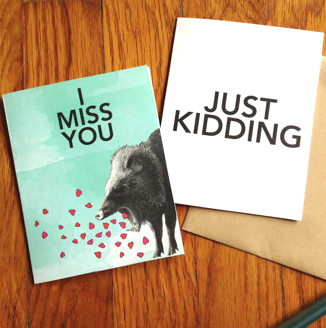

CAITLIN HAY INK.
 Caitlin Hay is a graphic artist whose mixed media pieces evoke sentimentality, humor, and warmth. Fascinated by words from a young age, she specializes in hand-lettering, and also loves using chalk, pressed flowers, black ink, and watercolor. She has an uncanny ability to adapt her style to fit the needs of her clients, and can find inspiration anywhere - from grocery stores to street signs to antique kitchen items.
Dreamed up in New York and born in Columbus, Ohio in 2012, Caitlin Hay Ink offers custom, hand-drawn art for people and events, commercial illustration, cheeky greeting cards, chalk signage, calligraphy, and special projects. Have an idea? Say hello!
Caitlin studied at Massachussetts College of Art & Design, and she believes in love.